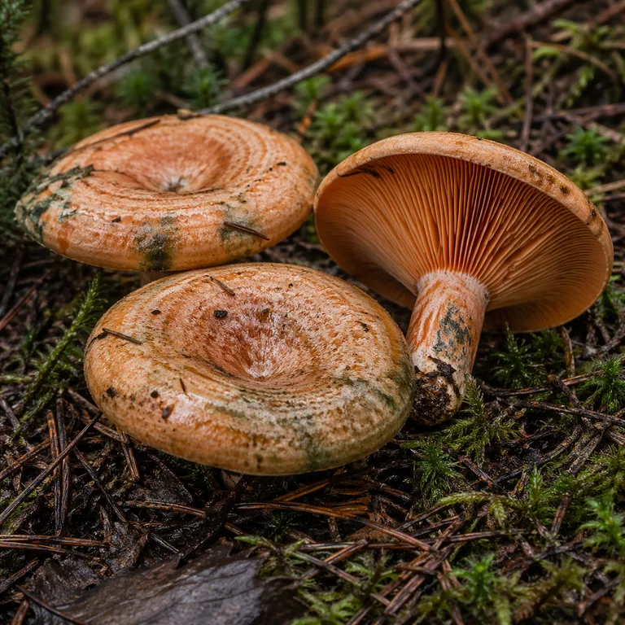
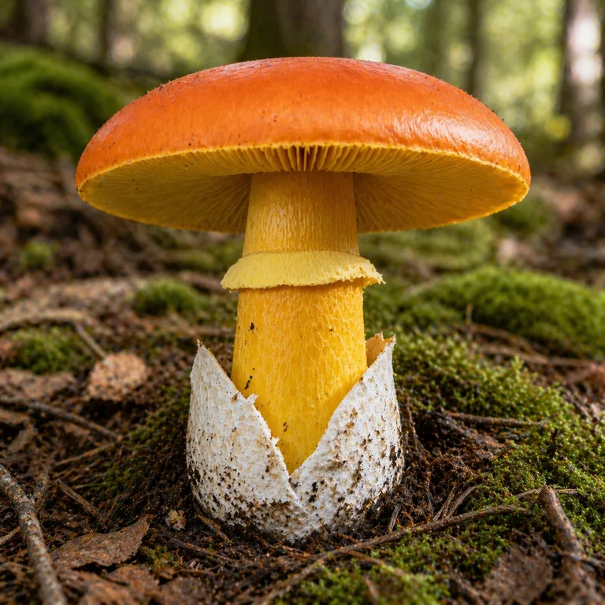
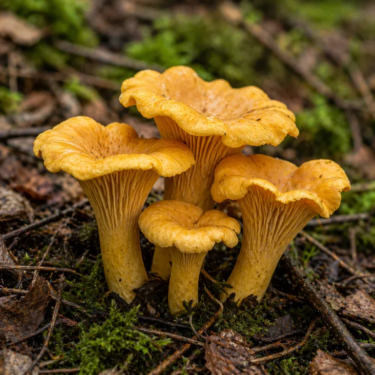

Actualizando meteo del punto…
🗺️ Zona de análisis
🌍 Suelo y clima



■ En objetivo · ■ Objetivo casi cumplido · ■ Objetivo no cumplido
🌤️ Meteorología del punto
Pulsa el mapa para ver la meteo del punto.
Previsión 7 días
| Día | Máx / Mín | Lluvia | Prob. | Viento |
|---|
Observado últimos 30 días
| Día | Lluvia | Máx / Mín | Acumulada |
|---|
🍄 Especies monitorizadas
Marca cuáles se muestran en el dashboard. El estado de cada una corresponde al punto actual del mapa.
Selección
Ficha por especie
Grupo: Ectomicorrícico
Temporada documentada: De septiembre a noviembre, pico en octubre, en pinares, hayedos, robledales y castañares de media montaña
Comestibilidad: Excelente
Rango de temperatura de suelo para fructificar: 10 a 18 ºC, óptimo 12–16 ºC
Mínima crítica: 0 ºC
Ventana hídrica: 14 días · óptima 60–100 mm
Retardo lluvia→pico: 15 días
Hábitat: Pinar, Bosque mixto, Hayedo, Robledal, Castañeral
Rango de pH: 4,5 a 6,5 · prefiere ácidos
Altitud: 600–1800 m
Identificación: sombrero pardo 8–25 cm con margen más claro; poros blancos→amarillos→oliva que no azulean; pie macizo con retículo blanquecino arriba; carne blanca inmutable, sabor dulce a avellana.
Cocina: excelente bien cocinada (nunca cruda por defecto); el secado concentra el aroma; no lavar a remojo.
Seguridad: guía orientativa, no identificación. Ante la duda, asociación micológica o experto.
Grupo: Ectomicorrícico
Temporada documentada: De septiembre a diciembre, pico en noviembre (octubre casi igual), solo bajo pinos (el pinar joven y aclarado rinde más)
Comestibilidad: Buena (nunca crudo)
Rango de temperatura de suelo para fructificar: 10 a 18 ºC (igual que el boleto, sin dato propio)
Mínima crítica: −3 ºC
Ventana hídrica: 14 días · óptima 50–90 mm
Retardo lluvia→pico: 21 días (primeros a los 7–15 días)
Hábitat: Pinar
Rango de pH: 4,5 a 8,0 · le importa poco
Altitud: 100–1600 m
Identificación: sombrero naranja teja 4–15 cm con bandas concéntricas, embudado de adulto; látex naranja zanahoria que verdea lento; carne granulosa que se rompe como tiza; sabor dulce, nunca picante; siempre bajo pino. El verdeado es oxidación normal, no podredumbre.
Cocina: buena a la brasa o plancha; nunca crudo (irritante); no lavar (absorbe agua); no secar: mejor escabeche o congelado tras saltear.
Seguridad: guía orientativa, no identificación. Ante la duda, asociación micológica o experto.
Grupo: Ectomicorrícico (robles, castaños, encinas)
Temporada documentada: De junio a octubre, pico en septiembre; termófila de verano y principio de otoño
Comestibilidad: Excelente (se puede comer cruda en carpaccio)
Rango de temperatura de suelo para fructificar: 10 a 18 ºC (igual que el boleto, sin dato propio)
Aire: útil 10–28 ºC, óptimo ~20 ºC
Mínima crítica: +2 ºC (no aguanta heladas)
Ventana hídrica: 14 días · óptima 30–80 mm
Retardo lluvia→pico: 21 días (primer flush 15–22 tras tormentas; hasta 40–50 en terreno seco)
Hábitat: Robledal, Castañeral y quercíneas (encina, carrasca, alcornoque)
Rango de pH: 4,0 a 6,0 · acidófila (en neutros, rara)
Altitud: 200–1200 m (hasta 1500 en los mejores casos)
Identificación: sombrero 5–20 cm naranja intenso con margen estriado; láminas y pie amarillos con anillo; volva en saco blanca; nace de un «huevo» blanco. Solo recolectar abiertos que muestren el naranja.
Cocina: excelente incluso cruda en carpaccio; frigo 3–5 días; deshidratada o congelada tras escaldado.
Seguridad: guía orientativa, no identificación. Ante la duda, asociación micológica o experto.
Grupo: Ectomicorrícico (robles, hayas, castaños, pinos, abedules)
Temporada documentada: De junio a noviembre, pico en septiembre
Comestibilidad: Excelente
Rango de temperatura de suelo para fructificar: 10 a 18 ºC (función común, sin dato propio)
Aire: útil 8–26 ºC, óptimo 15–20 ºC
Mínima crítica: 0 ºC (la helada veta la fructificación; sin veto de viento ni de máxima aislada)
Ventana hídrica: 14 días · óptima 60–100 mm (exceso progresivo, sin corte brusco)
Retardo lluvia→pico: 10 días (flush 7–14 tras tormentas; posible hasta 15–21)
Hábitat: Pinar, Hayedo, Robledal, Castañeral, Bosque mixto (+ abedul, avellano y pícea por especie)
Rango de pH: 4,0 a 5,5 · acidófila estricta (fuera de rango anula)
Altitud: 50–1500 m (preferencia 100–1400 m)
Identificación: sombrero 3–10 cm amarillo yema, embudado de adulto con margen enrollado; pliegues romos y decurrentes (no láminas); carne amarillenta con olor a albaricoque; crece en grupos, a veces en corros.
Cocina: excelente; aguanta bien el salteado y el secado; limpiar en seco sin remojo.
Aviso: valores iniciales v1.44 sin calibrar de campo; falta foto propia.
⭐ Mis setales
Guarda tus puntos y vuelve a ellos sin buscar. Se conservan en este navegador.
Añadir manualmente
La forma rápida es pulsar «⭐ Guardar setal» en el dashboard: usa el punto actual del mapa. El desplegable del dashboard incluye además 32 cotos y parques regulados (permiso de pago, punto en el monte (orientativo)): al elegir uno el mapa va allí y calcula. Verifica siempre norma y permiso vigentes.
Guardados
📖 Cómo funciona
La explicación completa de las predicciones, sin tecnicismos: qué se pregunta la app, de dónde sale cada respuesta y qué puedes (y no puedes) esperar.
La idea en una frase
Pulsas un punto del monte y la app comprueba si el tiempo de las últimas semanas, el suelo y el bosque que hay allí son los que les gustan al boleto, al níscalo, a la oronja y a la chantarela. Con eso te dice si merece la pena ir: ahora, dentro de unos días o mejor quedarse en casa.
La pregunta de cada seta
Las setas no salen porque sí: el micelio, que vive todo el año bajo tierra, solo fabrica setas cuando se juntan agua, temperatura suave y su árbol. La app traduce eso a cinco preguntas por especie. Cada una se responde con una nota de 0 a 1 y al final se combinan en un número de 0 a 100.
- ¿Ha llovido bastante? (40 % del clima) Lluvia de los últimos 14 días: el boleto puntúa desde 30 mm y rinde al máximo desde 60, sin penalizar el exceso; el níscalo arranca en 25 y rinde desde 50; la chantarela arranca en 30 y rinde desde 60. La reserva de 30 días aporta otro 20 %: por debajo de 30 mm el suelo se considera seco y la primera lluvia solo recarga.
- ¿Hace la temperatura justa? (20 % aire + 10 % suelo + 10 % humedad) El boleto quiere fresquito otoñal (óptimo 13,2 ºC ±3 ºC de margen, útil entre 6 y 28); el níscalo tiene más margen (óptimo 12–18 ºC ±3 ºC, útil entre 5 y 24); la chantarela es intermedia (óptimo 15–20 ºC ±3 ºC, útil entre 8 y 26). El suelo a 18 cm, donde vive el micelio, rinde entre 12 y 16 ºC. La humedad relativa acompaña desde el 75 % y es óptima desde el 80 %.
- ¿Hay bosque del bueno? Cada especie vale 1 en su hábitat y 0 fuera: el boleto en pinar, hayedo, robledal, castañar y mixto con alguno de ellos; el níscalo solo en pinar (mixto con pino vale); la oronja en robledal, castañar y quercíneas (encina, carrasca, alcornoque); la chantarela en pinar, hayedo, robledal, castañar y mixto (más abedul, avellano y pícea por especie). Pradera, pasto, matorral y ciudad valen cero para todas.
- ¿Es su época, su altura y su suelo? Boleto: septiembre–noviembre con pico en octubre, 600–1800 m, pH ácido 4,5–6,5. Níscalo: septiembre–diciembre con pico en noviembre, 100–1600 m, pH 4,5–8 (le importa poco). Oronja: junio–octubre con pico en septiembre, 200–1200 m, pH ácido 4–6. Chantarela: junio–noviembre con pico en septiembre, 50–1500 m (preferencia 100–1400), pH acidófila 4–5,5.
- ¿Hay veto? La helada (mínimas ≤ 0 ºC en boleto y chantarela, ≤ −3 ºC en níscalo, ≤ +2 ºC en oronja), el calor (máximas ≥ 28 ºC, salvo chantarela que no veta por máxima aislada) o el viento fuerte (rachas > 45 km/h, salvo chantarela que no veta por viento) ponen el clima a cero directamente, aunque llueva bien.
El truco del cálculo: las cinco notas se multiplican, no se suman. Si una vale cero (sin lluvia, helada o sin bosque), el total es cero aunque las otras cuatro sean perfectas. Por eso a veces el día está precioso y la app dice que no vayas.
La doble comprobación: mirar atrás para acertar hoy
Una seta tarda en salir: unos 15 días el boleto, unos 21 días el níscalo y la oronja y unos 10 días la chantarela desde que llueve bien. Por eso la app mira dos veces:
- Lo de hoy → futuro: el anillo (0–100) y el banner dicen si viene pico y en cuántos días.
- Lo de hace 10/15/21 días → ¿toca cosecha hoy? Es la lectura de cosecha (detalle «Cosecha hoy», con la causa si es que no).
De ahí salen los cuatro mensajes del banner: «¡Hoy tenemos setas para recoger! Vienen más: pico en ~X días» (verde, hay cosecha y viene más), «¡Hoy tenemos setas para recoger!» (verde, aprovecha que se cierra), «Hoy no tenemos setas en el campo. Previsión en ~X días» (amarillo, aún no) y «Condiciones inadecuadas» (rojo). Los casos con futuro llevan los días estimados para fructificación: no son fijos, se cuentan desde la lluvia que disparó el proceso (el primer día en que 14 días sumaron 60 mm para el boleto y la chantarela, o 50 para el níscalo y la oronja; una racha seguida por encima del umbral cuenta como un solo episodio), así que si llovió bien hace 10 días verás 5 y no 15. Si no hubo tal disparador, se muestra el plazo entero.
De dónde salen los datos
- El tiempo base (Open-Meteo) — 55 días observados más el día actual y 8 de previsión (el día actual es el antepenúltimo bloque, no el último). Para el pasado se usa lo observado, no previsiones. De aquí salen la lluvia diaria, las temperaturas del aire, la humedad, el viento, la temperatura del suelo a 18 cm (media de 7 días, la profundidad del micelio), la previsión de 7 días y los tramos hora a hora de hoy. La altitud del punto viene de su servicio de elevación.
- La lluvia y los extremos, con pluviómetro (AEMET OpenData) — el modelo a veces se queda corto en la sierra (en Rascafría midió 10 mm cuando el pluviómetro marcó 56). Con la clave integrada, del pluviómetro oficial más cercano (menos de 25 km) salen la lluvia de 14/30 días, las mínimas/máximas, la temperatura media, la humedad media y la racha de viento, con sus lecturas de hace 10/15/21 días. Las ventanas terminan hoy: diario validado (el «día» AEMET va de 07 a 07), modelo Open-Meteo solo para los días aún sin validar y lo que lleva hoy según el parte horario en directo. Los días intermedios aún sin validar no existen en ninguna fuente oficial hasta que se publican. Su nombre y distancia se ven en la fila «Estación meteo», y su parte en directo alimenta las filas del «ahora» y lo que lleva hoy. Del modelo solo quedan la temperatura del suelo a 18 cm (AEMET no guarda histórico) y la altitud.
- El suelo (SoilGrids) — mapa mundial de suelos: acidez, tipo de tierra (arena/limo/arcilla) y materia orgánica a 5–15 cm, en cuadrícula de 250 m. Es una estimación interpolada, no un análisis de tu parcela.
- El bosque (Mapa Forestal de España, MITECO) — se preguntan una por una 36 formaciones (¿hay hayedo aquí? ¿pinar de albar?…) en 120 m a la redonda, leyendo el nombre científico del árbol dominante. Si no hay bosque, su capa de usos dice si es pradera, pasto, matorral o dehesa con el código oficial LULUCF.
- La ciudad (OpenStreetMap) — solo como último recurso: si no hay bosque ni uso claro, se cuentan edificios en 150 m (10 o más = urbano, veto). Nunca se usa para el bosque; si falla, no pasa nada.
- El nombre del pueblo y el buscador — OpenStreetMap; acepta localidades y coordenadas en decimal, grados/minutos/segundos y UTM. Si falla, verás las coordenadas.
- Caché de 10 minutos — un punto ya visitado no vuelve a la red hasta pasados 10 minutos: se repinta al instante indicando la antigüedad («Datos de hace X min»).
Qué pasa cuando falta un dato
La app no te pide nada a mano: si una fuente falla, usa un valor neutro y te lo dice. Hábitat sin determinar cuenta 0,70 y sin pH el suelo no penaliza (vale 1). El pluviómetro exige una serie mínima (10 de 14 días, 20 de 30, estación a menos de 25 km y actualizada hace menos de 10 días); si no llega, se usa el modelo y la fila de estación dice el motivo. Cada petición a internet se reintenta una vez ante fallos de red. Un dato ausente no hunde la predicción, pero tampoco la decide.
Lo que no puede hacer
- No confirma setas ni puntos exactos: orienta a escala de monte (120 m de bosque, 250 m de suelo, ~10 km de modelo), el último paso es tu ojo.
- El pinar joven del níscalo no se distingue en el mapa: cuenta cualquier pinar.
- Un año raro (una sola tormenta, otoño tardío) despista a cualquier modelo, a este también.
- La oronja es vecera (no repite igual cada año) y su ciclo se alarga hasta 40–50 días en terreno duro y seco; el motor usa el flush típico de 21 días. Tampoco modela el bonus de choque térmico/granizo ni la orientación sur que prefiere.
- Las fichas son guía divulgativa, no identificación: ante la duda, asociación micológica o experto.
La ciencia detrás: producción de micorrizas en pinares de Soria (Martínez-Peña 2012 y siguientes), micelio y suelo (Santolamazza-Carbone 2023) y óptimo de 13,2 ºC medido en campo (2025). Los umbrales del níscalo (12–18 ºC, pH 4,5–8, retardo 21 días, Sep–Dic con máximo en noviembre) están validados por el autor de esta app; la guía de identificación sigue a sporas.io.
🔍 Leyenda
Niveles y factores
- ≥75 excelente
- Convergencia de agua, temperatura y hábitat. Ventana de salida; el banner dice si hay setas hoy y los días al pico.
- 50–75 bueno
- Casi todo a favor; falta lluvia o el suelo aún está cálido.
- 25–50 regular
- Algún factor flojo. Vigila la próxima lluvia.
- <25 nulo
- Veto activo o hábitat incompatible. No salir por esta especie.
- Anillo
- Potencial futuro (0–100) con lo de hoy. La etiqueta dice el nivel (excelente / bueno / regular / nulo).
- Banner
- Verde: hay setas hoy. Amarillo: aún no, con previsión en ~X días. Rojo: condiciones inadecuadas.
- Doble lectura
- Anillo y condiciones = futuro con lo de hoy (pico en +15 d boleto / +21 d níscalo y oronja / +10 d chantarela, contados desde la lluvia que disparó el proceso). «Cosecha hoy» = con lo de hace 15/21/10 d, con la causa si es que no (faltó lluvia, helada, calor, viento). Umbral de salida ≥ 40.
- Clima (40·P14 + 20·reserva + 20·T_aire + 10·T_suelo + 10·HR)
- P14 óptima 60–100 (boleto y chantarela) / 50–90 (níscalo) / 30–80 (oronja); reserva P30; aire óptimo 13,2 ºC ±3 (boleto) / 12–18 ºC ±3 (níscalo) / ~20 ºC ±3 (oronja) / 15–20 ºC ±3 (chantarela); suelo 12–16 ºC a 18 cm; HR ≥ 75. Veto: helada (mín ≤ 0 en boleto y chantarela, ≤ −3 níscalo, ≤ +2 oronja), calor (máx ≥ 28, salvo chantarela) o viento > 45 km/h (salvo chantarela) → clima 0.
- Terreno
- Boleto 600–1800 m (rampa 500–600 y 1800–2000; fuera de 400–2000 anula). Níscalo 100–1600 m (rampa 1600–1900; bajo 100 vale 0,6). Oronja 200–1200 m (rampa 1200–1500; 100–200 vale 0,6). Chantarela 50–1500 m (pleno 100–1400; rampas 50–100 y 1400–1500).
- Suelo
- Boleto pH 4,5–6,5 ±0,5 (hasta 7,2 tolerable). Níscalo pH 4,5–8 ±0,5. Oronja pH 4–6 ±0,5. Chantarela pH 4–5,5 ±0,5 (estricta: fuera anula). SoilGrids 5–15 cm interpolado a 250 m; sin dato no penaliza.
- Flora
- Binaria (v1.40): 1 en hábitat de la especie, 0 fuera. Boleto: Pinar, Hayedo, Robledal, Castañeral y Mixto con alguno de ellos. Níscalo: solo Pinar (mixto con pino vale). Oronja: Robledal, Castañeral, Quercíneas y Mixto con quercíneas. Chantarela: Pinar, Hayedo, Robledal, Castañeral y Mixto (+ abedul, avellano y pícea por especie). Pradera, Pasto, Matorral y Urbano siempre 0. Sin bosque MFE se usa
ff_uso(herbáceo/cultivo = Pradera, dehesa/arbustivo = Pasto); en último caso, edificios OSM en 150 m (≥10 = urbano). Si todo falla, 0,70. Nada se mete a mano. - Temporada
- Boleto: octubre 1 · sep/nov 0,85 · ago/dic 0,4 · resto 0,1. Níscalo: noviembre 1 · octubre 0,9 · septiembre 0,85 · diciembre 0,6 · agosto 0,3 · resto 0,1. Oronja: septiembre 1 · agosto 0,9 · octubre 0,85 · julio 0,5 · junio 0,2 · resto 0,1. Chantarela: septiembre 1 · agosto/octubre 0,9 · julio 0,8 · junio 0,6 · noviembre 0,4 · resto 0,1.
- Oronja
- Termófila de verano (jun–oct): retardo ~21 días (primer flush 15–22 tras tormentas; hasta 40–50 en seco), veto desde +2 ºC, quercíneas y castaño (haya y pinar: 0). Calibrada v1.39 con bibliografía (MicoAragón, sporas.io); sin validación de campo.
- Chantarela
- De junio a noviembre, pico en septiembre: retardo 10 días (flush 7–14 tras tormentas), veto solo por helada (≤ 0 ºC), sin veto de viento ni de máxima; pH 4–5,5 estricto, 50–1500 m. Valores iniciales v1.44 sin calibrar de campo; foto: sporas.io.
- Fuentes
- Lluvia: pluviómetro AEMET ≤ 25 km + modelo en el hueco sin validar (o todo modelo). Suelo 18 cm, previsión y altitud: Open-Meteo. Suelo: SoilGrids. Bosque: MFE. Ciudad y topónimos: OSM. Caché de punto: 10 min.